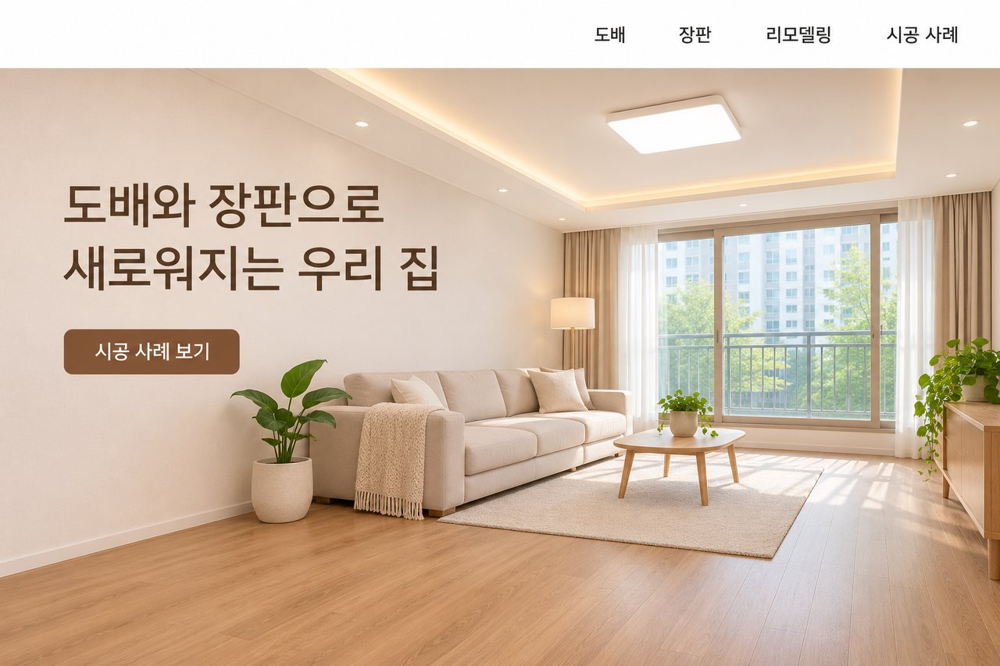
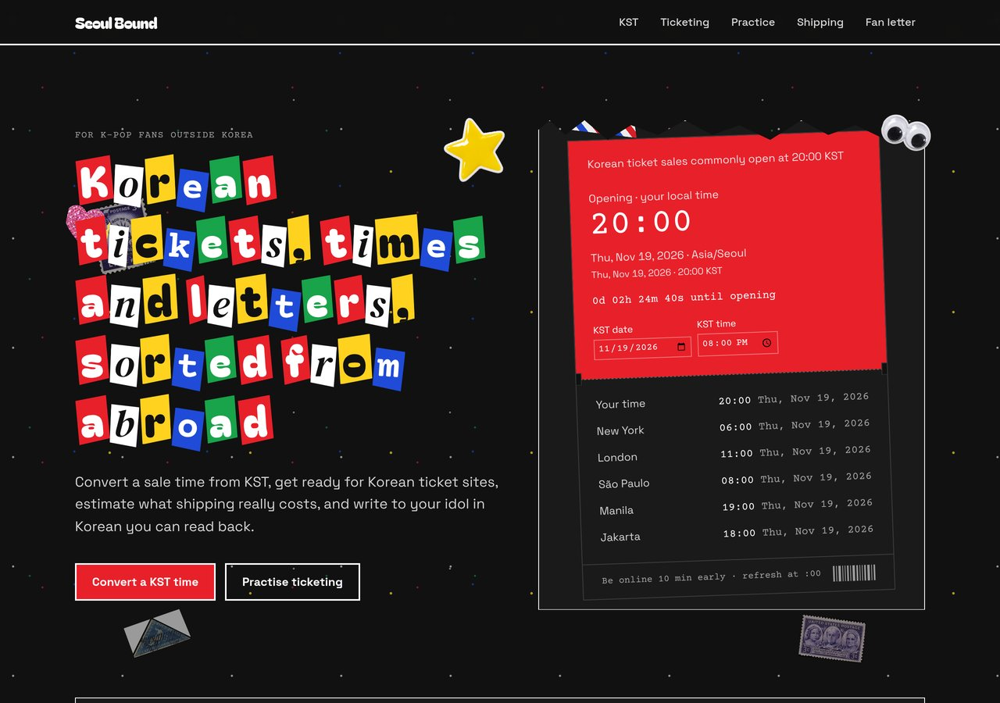
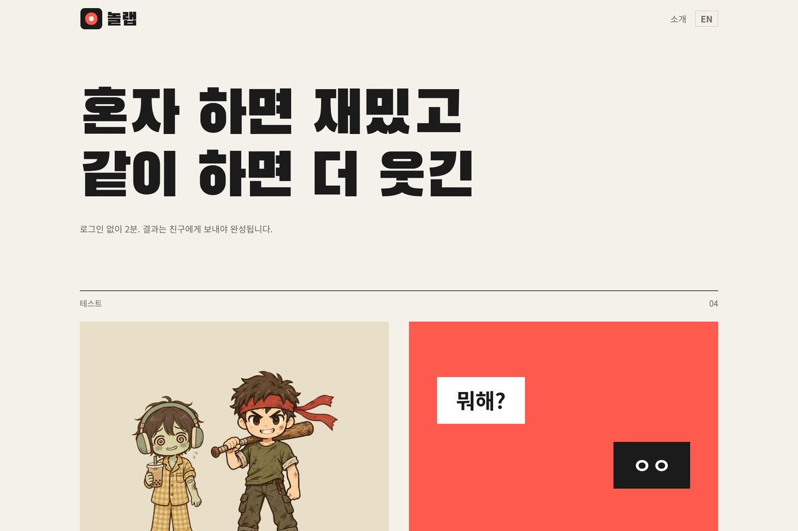

인테리어 업체 웹사이트
업체 의뢰 제작실제 업체 의뢰로 만든 원페이지 홈페이지입니다. 업체 소개, 시공 분야, 진행 과정, 문의 폼을 한 페이지에 담았고 휴대폰과 PC 화면 모두에 맞췄습니다.
특정 업체 정보는 공개하지 않습니다. 화면은 업체 정보를 뺀 익명 시안 이미지입니다.
백엔드 API와 검색 파이프라인을 구현하고, 테스트와 측정으로 확인했습니다. 여행 일정·정산 앱 Escale과 강의자료 RAG 검색 서비스를 개인 프로젝트로 개발하고 있습니다. 우송대학교 AI·빅데이터학과에 재학 중이며 백엔드·AI 서비스 개발 직무를 희망합니다.
만들고 싶은 게 생기면 앱이든 백엔드든 하드웨어든 가리지 않고 직접 끝까지 만들어 보는 개발자입니다. 화면 흐름부터 서버, 데이터 저장, 배포까지 한 흐름으로 이어 붙이는 걸 좋아하고, 처음 써보는 기술도 직접 부딪혀 보면서 익힙니다.
일할 때는 AI 여러 개를 동시에 돌리면서 작업을 나누고, 그 사이에서 방향을 잡는 방식으로 개발합니다. 다만 결과를 그대로 받아쓰지 않고, 틀리면 안 되는 부분은 테스트로 확인하고, 제가 설명할 수 있을 때까지 이해한 뒤에 반영합니다. 잘 돌아가는 것만큼 쓰기 편하고 보기 좋은 것도 중요하게 생각합니다.
가게·업체 홈페이지도 직접 만듭니다. 만든 화면은 웹 작업물에 정리했습니다.
로봇 암 관절용 회전각 센서 모듈·지그 개발, IPS 센서 파트 담당
Queue & Priority, Message Queue 담당
ESP32 Wi-Fi와 ThingSpeak 업로드 테스트, PC 전력 상태의 kWh 환산
병장 만기전역
직접 사용한 기술을 분야별로 정리했습니다. 사용 경험은 결과물과 검증 기록이 있는 기술, 프로젝트 적용은 구현했지만 실제 실행 또는 통합 검증이 남은 기술, 학습 중은 프로젝트에 적용하기 전인 기술입니다.
직접 만든 웹사이트와 웹 화면입니다. 이미지를 누르면 큰 화면으로 볼 수 있습니다.

실제 업체 의뢰로 만든 원페이지 홈페이지입니다. 업체 소개, 시공 분야, 진행 과정, 문의 폼을 한 페이지에 담았고 휴대폰과 PC 화면 모두에 맞췄습니다.
특정 업체 정보는 공개하지 않습니다. 화면은 업체 정보를 뺀 익명 시안 이미지입니다.

해외 K-pop 팬을 위한 웹 도구 사이트입니다. 한국 콘서트 티켓 오픈 시간을 현지 시간으로 바꾸고, 한국 티켓 사이트 예매를 준비·연습하고, 배송비를 추정하고, 한국어 팬레터를 쓸 수 있게 만들었습니다.

친구와 같이 하는 테스트 모음 사이트입니다. 좀비 생존 테스트, 답장 유형, 인터넷 나이, 연말 카드 등을 로그인 없이 바로 하고 결과를 친구에게 공유할 수 있습니다.
반복되는 자료 정리나 문서 찾기를 줄이는 작업을 직접 만들어 본 경험을 바탕으로, 가게·업체에 맞는 방법을 함께 상담합니다.
매뉴얼, 안내문, 규정 같은 가게 문서를 올려 두면 직원이나 손님이 질문했을 때 해당 문서를 찾아 답하는 챗봇입니다. 답과 함께 어느 문서의 어느 부분인지 보여 주고, 문서에 없는 내용은 지어내지 않고 모른다고 답하게 만듭니다.
근거: 강의자료 PDF를 검색해 근거 페이지와 함께 답하고, 근거가 부족하면 답을 보류하는 RAG 검색 서비스를 직접 만들었습니다. · 강의자료 RAG 검색 서비스 보기
여러 사이트나 파일에 흩어진 정보를 정해진 형식으로 모으고, 중복과 잘못된 값을 걸러 한곳에 저장하는 작업입니다. 매번 손으로 복사해 표로 옮기던 일을 줄이는 데 쓸 수 있습니다.
근거: 여러 출처의 팝업스토어 정보를 모아 정제하고 저장하는 파이프라인을 만들었습니다. · Popup Store Atlas 보기
일정·예약·경비를 여러 앱에서 따로 확인하는 불편을 줄이기 위해 개발했습니다. 여행 준비 기록을 다음 일정 확인과 동행자 정산으로 연결했고, 핵심 흐름은 로그인 없이 기기 저장소에서 동작하도록 구현했습니다.
시험 준비 중 강의자료와 답변의 근거를 반복해서 찾는 문제를 다뤘습니다. 허용된 자료 검색→GPT 답변·인용 검증→원문 PDF 확인을 구현했고, 근거가 부족하면 답변을 보류하도록 구성했습니다.
팝업스토어의 위치·운영 기간을 여러 출처에서 따로 찾는 불편을 줄이기 위해 개발했습니다. 수집·정제·PostGIS 적재부터 지도 조회까지 연결했습니다.
로봇 암 관절용 회전각 센서 모듈·지그 개발을 목표로 한 산학과제에 참여했습니다. IPS 센서의 동작 원리와 특징 정리를 맡았으며, 과제는 진행 중입니다.
운영체제 팀 과제에서 FreeRTOS 기반 통신 시스템의 우선순위 큐와 메시지 전달 구간을 담당했습니다.